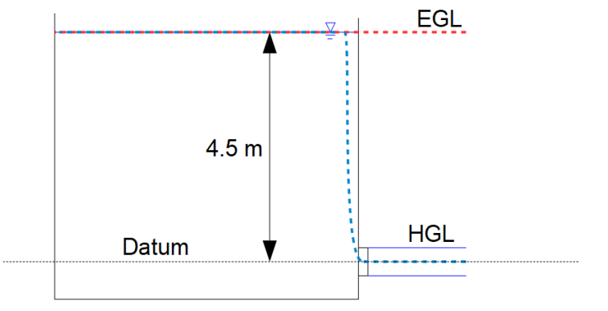
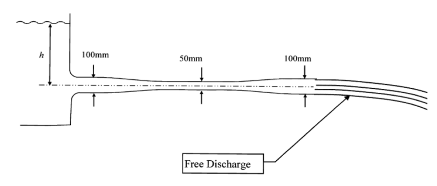
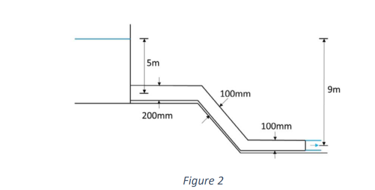
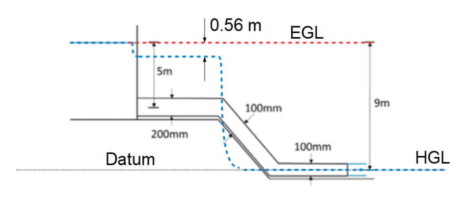
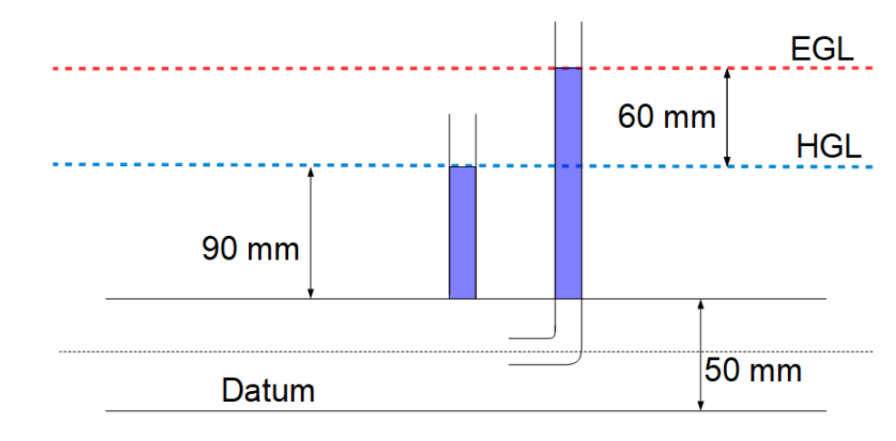
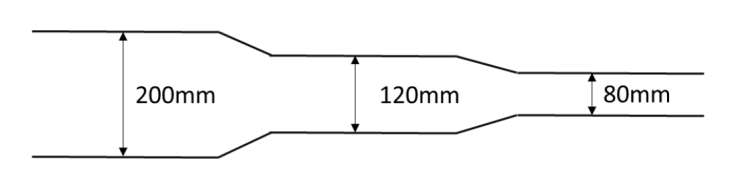
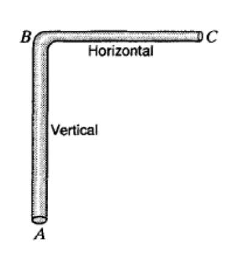
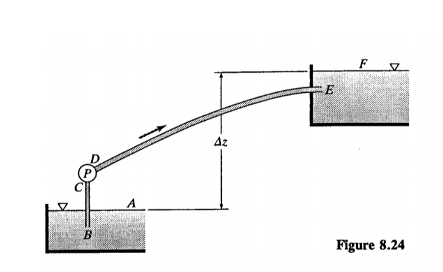

Module 4: Conservation of Mass and Energy#
The exercises in this module range from lecture 14 to lecture 20.
Global variables:
Problems for Lecture 14: The Bernoulli Equation#
Question 1 (*)#
Name each of the terms in the Bernoulli equation (stated below), and describe their interaction in the work-energy interpretation of this equation.
Question 2 (*)[R]#
Water flows within a horizontal pipe of diameter 0.1 m at a velocity of 0.2 m/s. The centreline of the pipe is located at the horizontal datum. If the pressure in the pipe is 120 kPa, calculate the pressure and velocity head within the pipe.
Answer
\( 12.232 \; m \; ; 0.002 \; m \; \)
Hint
The pressure head can be calculated with the following equation:
The velocity head can be calculated with the following equation:
You can assume the density of water is 1000 kg/m3
The “m” in pressure_m and velocity_m shows that these are head values expressed in meters.
Solution
Show code cell outputs
Question 3 (**)[R]#
For the pipe flow described in question 2, a section of the pipe was elevated by 6 m to avoid an obstruction. Calculate the change in pressure and velocity within the pipe, and justify your answer.
Answer
\( \;61.14 \; kPa \; ; \; the \; velocity \; doesn't \; change \)
Hint
Use both mass and energy conservation principles in your answer. Note that you can assume that the diameter of the pipe is unchanged in the elevated section.
Question 4 (*)[R]#
Water discharges from a nozzle as a free jet to the atmosphere.
a. If the velocity of the jet is 3 m/s, calculate the velocity head within the jet.
b.Explain why the pressure head within the jet can be neglected
Answer
\( a) \; 0.46 \; m \)
Question 4 (a)
Hint
The velocity head can be calculated with the following equation:
The “m” in velocity_m shows that these are head values expressed in meters.
Estimation Tip: Before or after you dive into full calculations, try estimating the velocity head using \(2g \approx 20\). It’s a useful way to check whether your answer falls within a reasonable range and to gradually build numerical intuition.
Solution
Show code cell outputs
Question 4 (b)
Solution
Show code cell outputs
Pressure is atmospheric within a free jet.
Question 5 (*)#
A pipe containing oil (density = 960 kg/m3) has a diameter of 0.1 m.
a. If the discharge within the pipe is 0.06 m3 /s, calculate the velocity head within the pipe.
b. If the pressure head is 12 m, calculate the pressure within the pipe.
Answer
\( a) \; 2.97 \; m \)
\( b) \; 11.3 \; kPa \)
Question 5 (a)
Hint
To determine the velocity head, you’ll first need to apply mass conservation to calculate the velocity in the pipe.
Question 5 (b)
Hint
The pressure can be solved from the following equation of the pressure head:
The “m” in pressure_m shows that these are head values expressed in meters.
Question 6 (**)#
A tank has a circular base (diameter = 1.5 m) and is filled with water to a height of 0.8 m. A small drain pipe with a diameter of 20 mm is opened at the base of the tank, which discharges water as a free jet to the atmosphere.
a. Determine the discharge of water out of the tank.
b. Some time later, the height of water in the tank is 0.3 m. Determine the new discharge of water out of the tank at this time.
c. Both of the above calculations assume that the flow is steady out of the tank, i.e. that the rate at which the water height in the tank changes is very slow compared to the velocity out of the tank. Based on your answer to (a), comment on whether this assumption is reasonable
Answer
\( a) \; 0.0012 \; m^3/s \)
\( b) \; 0.0008 \; m^3/s \)
Question 6 (a)
Hint
Apply the Bernoulli equation between a point at the surface of the tank and in the free jet. Assume no energy losses.
Consider whether pressure is atmospheric at either of these points.
Solution
Show code cell outputs
Considering the jet is free to the atmosphere, the variables in point 2 will be:
Considering that point 1 is in contact with the atmosphere, we have the following:
\(p_{atm}\)=0 Pa
\(V_1\)= is near 0 m/s because the tank is large
Using this values you have the following equation:
This equation is the Torricelli’s law:
And the discharge of the tank is
Show code cell outputs
Question 6 (b)
Hint
Use a similar approach to part a, recognising that the elevation of a point at the free surface will have reduced to 0.3 m.
Solution
Show code cell outputs
Question 6 (c)
Hint
To assess whether the steady-flow assumpt ion is reasonable, we need to consider whether the water level in the tank decreases slowly relative to the velocity of the outflow. For that reason, the velocity at which the free surface falls needs to be calculated. You can apply the Continuity equation and a suitable control volume to calculate this.
Solution
Show code cell outputs
Show code cell outputs
Show code cell outputs
The initial change in water level of the tank is 0.7 mm/s, so this is reasonable.
Question 7 (*)[R]#
Water flows from a pipe of 1m diameter through a nozzle of 0.2m diameter before exiting as a free jet.
a. If the velocity in the free jet is 3 m/s, calculate the discharge and velocity in the pipe.
b. Calculate the pressure within the pipe.
c. State any assumptions made in the above calculations.
Answer
\( a) 0.094 \; m^3/s \; ; 0.120 \; m/s \; \)
\( b) \; 4.49 \; kPa \)
Question 7 (a)
Hint
Apply mass conservation to calculate these quantities.
Question 7 (b)
Hint
We can use Bernoulli equation to calculate the pressure within the pipe:
Consider which (if any) of these terms can be cancelled in your calculations.
Question 7 (c)
Question 8(*)[R]#
Water flows from a large reservoir through a 100 mm pipe before exiting the pipe as a free jet at a location 5 m below the water surface of the reservoir. Calculate the discharge within the pipe.
Answer
\( 0.08 \; m^3/s \)
Hint
Apply the Bernoulli equation to determine the velocity. When calculating the discharge, you may assume that the free jet has the same diameter as the pipe.
Solution
Show code cell outputs
The assumptions for this problem are the following:
\(p_{atm}\)= 0 Pa \(V_1\)= is near 0 m/s because the reservoir is large \(p_{pipe}\)= 0 Pa because it is exposed to atmospheric pressure
Considering these simplifications, the Bernoulli equation simplifies to the Toricelli equation
Show code cell outputs
Question 9 (**)[R]#
Oil (density = 940 kg/m3) flow through a pipe of diameter 120 mm. At some location in the pipe, the diameter is reduced to 90 mm.
a. If the pressure and velocity in the wider (120 mm) section of the pipe are 280 kPa and 5 m/s respectively, calculate the discharge in the pipe.
b. Calculate the velocity and pressure in the constricted section.
Answer
\( a) 0.057 \; m^3/s \; \)
\( b) 8.89 \; m/s \; ; 254.61 \; kPa \; \)
Question 9 (a)
Hint
The discharge in the pipe can be calculated as:
Question 9 (b)
Hint
The velocity can be calculated as:
To calculate the pressure we can use the Bernoulli equation:
Question 10(***)#
Water flows in an open channel with a constant width of 1.5 m. At some point in the channel A, the depth is 0.5 m and the velocity is 2.5 m/s. The channel then steps down 1.0 m in a smooth transition to point B. Show that the water depth at B, 𝑑𝐵, can be expressed as: \(d_B= \frac{V_Ad_A}{\sqrt{V_A^2+2g(d_A+1-d_B)}}\) where 𝑣𝐴 is the velocity at point A, 𝑔 is the gravitational acceleration, and 𝑑𝐴 is the water depth at point A.
Hint
Use the Continuity equation to relate the velocities at points A and B:
Then use this to substitute into the Bernoulli equation:
Replace the pressure terms using:
Solution
Show code cell outputs
We can use Bernoulli equation to show that the water depth can be expressed as the equation showed in the question.
The assumptions are the following
The pressure in point 1 and 2 can be expressed with the following equation
Then we can used the the conservation of mass to calculate the velocity in section B.
Organizing the equation we have that
Problems for Lecture 15: Energy Grade Line and Hydraulic Grade Line#
Question 1 (*)[R]#
Water flows within a horizontal pipe of diameter 0.1 m at a velocity of 0.25 m/s. The centreline of the pipe is located 2.5 m above the horizontal datum. If the pressure in the pipe is 120 kPa, calculate the height of the EGL and HGL relative to datum.
Answer
\( 14.74 \; m \; , \;14.73 \; m \)
Hint
The energy grade line can be calculated as:
The hydraulic grade line can be calculated as:
Question 2 (*)#
Water flows from a large reservoir through a 200 mm pipe before exiting the pipe as a free jet at a location 4.5 m below the water surface of the reservoir.
a. Calculate the discharge within the pipe.
b. Draw the HGL and EGL for this problem.
Answer
\( a)\; 0.295 \; m^3/s \)
Question 2 (a)
Hint
The discharge flow within the pipe can the calculated as:
And the velocity can be calculated with the Toricelli Law
Solution
Show code cell outputs
Question 2 (b)
Hint
The EGL (Energy Grade Line) is the total energy at each point along the flow. This includes the kinetic energy and the potential energy. Considering there is no friction loss in this exercise, the EGL should be a straight line, strarting from the water surface to the jet exit.
The HGL (Hydraulic Grade Line) represents the sum of the pressure head and the elevation head. At the reservoir, the HGL will be at the same level of the water surface, but as the water moves down the jet, the HGl will drop. This occured because the pressure head in the free jet is essentially zero as the presurre is atmospheric.
Solution
Show code cell outputs

Question 3 (**)[R]#
In the situation illustrated in the figure, the water height h is 200 mm.
a. Calculate the discharge through the pipe.
b. Calculate the pressure in the narrow section.
c. Draw the EGL and HGL for this problem.

Answer
\( a) \;0.0156 \; m^3/s \)
\( b) \;-29.4 \; kPa \; (gauge\;pressure) \)
Question 3 (a)
Hint
From the Bernoulli equation we have:
And the discharge can be calculated as:
Question 3 (b)
Hint
From the Bernoulli equation we have:
The assumptions are the following
\(p_1=0 Pa\) (atmosferic presure)
\(V_1= 0 m/s\) (because it is a reservoir)
Question 3 (c)
Hint
The EGL (Energy Grade Line) is the total energy at each point along the flow. This includes the kinetic energy and the potential energy. Considering there is no friction loss in this exercise, the EGL should be a straight line at the level of the water surface.
The HGL (Hydraulic Grade Line) represents the sum of the pressure head and the elevation head. At the reservoir, the HGL will be at the same level of the water surface. As the water flows down the pipe, the HGL will drop due to the increasing velocity, but when the diameter is reduced, the HGL decreases due to the increment in velocity. At the pipe exit, the pressure head becomes zero, so the HGL will end at the same level as the exit of the pipeline.
Question 4 (**)[R]#
Water flows out of a large tank and through the pipeline as shown in Figure 2.
a. Construct the energy grade line and hydraulic grade line for the pipe, labelling the relevant quantities on your diagram.
b. Using your solution to part (a), calculate the pressure and velocity within the 200mm diameter section of the pipe.
c. State any assumptions you have made within your answers to (a) and (b)

Answer
\( b) \;43.53 \; kPa \;,\; 3.32 \; m/s \; \)
Question 4 (a)
Hint
The EGL (Energy Grade Line) is the total energy at each point along the flow. This includes the kinetic energy and the potential energy. Considering there is no friction loss in this exercise, the EGL should be a straight line, strarting from the water surface to the exit of the pipeline.
The HGL (Hydraulic Grade Line) represents the sum of the pressure head and the elevation head. At the reservoir, the HGL will be at the same level of the water surface, but as the water flows down the pipe, the HGL will drp at each point due to the increasing velocity. At the pipe exit, the pressure head becomes zero, so the HGL will end at the same level as the exit of the pipeline
Solution
Show code cell outputs

Question 4 (b)
Hint
The velocity can be calculated with the Toricelli equation in the pipe exit.
Once the velocity at the exit is calculated, the discharge can be determined with:
Once the discharge is calculated, the velocity in the 200 mm diameter pipe can be determined by using the conservation of mass
Once the velocity in this pipe is calculated, the Bernoulli equation can be determine between the surface of the tank and that pipe
The following assumptions can be made
Using this, the Bernoulli equation for this exercise is:
Solution
Show code cell outputs
Question 4 (c)
Solution
Show code cell outputs
Incompressible fluid, no losses in pipe, diameter of free discharge is equal to pipe diameter.
Question 5 (**)[R]#
An object is placed in an open channel such that a stagnation point (zero velocity) is created on the leading edge of the object. You may assume that the density of water is equal to 1000 kg/m3 for this problem.
a. If the water in the channel is flowing at a velocity of 2 m/s, calculate the dynamic pressure at the stagnation point. {2 kPa}
b. If the object is replaced by a pitot tube, which also creates a stagnation point within the same flow, calculate the height to which water would rise in the pitot tube. {h=0.204 m}
c. A short time later, the velocity in the open channel has changed. The water level in the pitot tube is now 150 mm. Calculate the new velocity in the channel. {1.72 m/s}
d. Explain which line is represented by the water level in the pitot tube, and which line is represented by the water level in the channel itself.
Answer
\( a) \;2 \; kPa \)
\( b) \;h= \; 0.204\; m \)
\( c) \;1.72 \; m/s \)
Question 5 (a)
Hint
From Bernoulli equation we have:
Assuming the following we can solve the pressure at the stagnation point:
\(p_1=0 Pa\) (atmosferic pressure)
\(z_1=z_2=0 m\) (horizontal channel)
\(V_1=0 Pa\) (given in the question)
Question 5 (b)
Hint
The height to which water would rise in the pitot tube can be solved from the following equation:
Solution
Question 5 (c)
Hint
The velocity can be calculated using the following equation:
Question 5 (d)
Question 6 (**)[R]#
Water flows through a pipe (diameter of 50 mm). A pitot tube placed in the flow measures a water height of 150 mm relative to the centre of the pipe, and a piezometer at the side of the pipe measures a water height of 90 mm relative to the centre of the pipe.
a. Determine the average velocity of the water flowing in the pipe. {1.08 m/s}
b. Calculate the dynamic pressure at the stagnation point of the pitot tube. {589 Pa}
c. Draw the EGL and HGL for this problem.
Answer
\( a) \;1.08 \; m/s \)
\( b) \;589 \; Pa \)
Question 6 (a)
Hint
The piezometer measures the pressure head component of the Bernoulli equation along with the elevation head (𝑧). The Pitot tube measures the pressure head, the velocity head, and the elevation head (z). This means the Pitot tube measures the Energy Grade Line (EGL) while the piezometer measures the Hydraulic Grade Line (HGL).
Considering the equation for HGL:
And the equation for EGL:
We know that EGL is 0.15 m, and the HGL is 0.09 m. If we use this values with the equation we have
And the equation for EGL:
Solution
Show code cell outputs
Question 6 (b)
Hint
The dynamic pressure (𝑞) can be calculated using the formula:
Solution
Show code cell outputs
Question 6 (c)
Hint
The piezometer measures the pressure head component of the Bernoulli equation along with the elevation head (𝑧). The Pitot tube measures the pressure head, the velocity head, and the elevation head (z). This means the Pitot tube measures the Energy Grade Line (EGL) while the piezometer measures the Hydraulic Grade Line (HGL).
Considering the equation for HGL:
And the equation for EGL:
We know that the Energy Grade Line (EGL) is 0.15 m and the Hydraulic Grade Line (HGL) is 0.09 m. Assuming there are no friction losses, both lines will be horizontal.
Solution
Show code cell outputs

Question 7 (**)#
Water flows through the pipe shown in the figure with a velocity of 3 m/s (in the 200 mm section of the pipe).
a. If the pressure in the 200 mm section of the pipe is 350 kPa, calculate the pressures in the other two sections of pipe.
b. Draw the EGL and HGL for this problem.

Answer
\( a) \;319.78 \; kPa\;,\;178.72\; kPa \)
Question 7 (a)
Hint
The pressure in the 120 mm section can be calculated using the Bernoulli equation between the 200 mm and the 120 mm sections:
The pressure in the 80 mm section can be calculated using the Bernoulli equation between the 120 mm and the 80 mm sections:
As the pipe is horizontal, \(z_1=z_2\), and \(V_2\) and \(V_2\) can be calculated considering conservation of mass:
Question 7 (b)
Hint
The EGL (Energy Grade Line) is the total energy at each point along the flow. This includes the kinetic energy and the potential energy. Considering there is no friction loss in this exercise, the EGL should be a straight line.
The HGL (Hydraulic Grade Line) represents the sum of the pressure head and the elevation head.This line will drop with each reduction in diameter due to the increase in velocity.
Problems for Lecture 16: Flow Measurement#
Question 1 (*)#
Using the measurements from a Venturi Meter, you have calculated that the discharge through a pipe system should be 24 litres per second. To check this theoretical discharge, you have captured a volume of 4.0 m3 from the pipe system. It took 3 minutes to collect this volume. Calculate the discharge coefficient.
Answer
\( 0.926 \)
Hint
To calculate the discharge coefficient (𝐶𝑑), we need to compare the actual discharge with the theoretical discharge obtained from the Venturi meter.
Question 2 (*)#
Using the measurements from an Orifice Meter, you have calculated that the discharge through a pipe system should be 3.0 litres per second. You use a calibration tank with a surface area of 0.4 m2 to check this discharge. If the water level in the calibration tank rises at a rate of 4 mm/s, calculate the discharge coefficient.
Answer
\( 0.533 \)
Hint
To calculate the discharge coefficient (𝐶𝑑), we need to compare the actual discharge with the theoretical discharge obtained from the Venturi meter.
Solution
Show code cell outputs
The actual discharge flow can be calcualted as
Show code cell outputs
Question 3#
Using the measurements from a Venturi Meter, you have calculated that the discharge through a pipe system should be 13 litres per second. Downstream of the Venturi Meter, you have installed a piezometer and a pitot tube. If the difference in water levels between the piezometer and the pitot tube is 70 mm, and the pipe diameter is 0.1 m, calculate the discharge coefficient.
Answer
\( 0.708 \)
Hint
The water level in the piezometer is the GHL and the water level in the pitot tube is the EGL. The difference between those two water levels (EGL and HGL) is the velocity head.
Question 4 (**)[R]#
Water flows in an open channel of 2.0 m width. At some point in the channel, the water flows over a smooth submerged object that is 1.0 m high. If the water depth upstream of the object is 2.5 m and the depth downstream of the object is 0.5 m, calculate the discharge in the channel.
Answer
\( 6.4 m^3/s \)
Hint
Use a combination of the Bernoulli equation and the continuity equation. The cross-sectional area is given by the water depth multiplied by the channel width
Question 5 (**)#
Water flows in an open channel of 1.2 m width. At some point in the channel, the water flows over a smooth submerged object. If the water depth upstream of the object is 1.2 m and the depth downstream of the object is 0.4 m, and the actual discharge in the channel is 1.6 m3/s, calculate the discharge coefficient
Answer
\( 0.79 \)
Hint
Use a combination of the Bernoulli equation and the continuity equation. The cross-sectional area is given by the water depth multiplied by the channel width
Solution
Show code cell outputs
Show code cell outputs
Question 6 (*)[R]#
A Venturi Meter has a pipe diameter of 120 mm and a throat diameter of 50 mm. When water is flowing through the Venturi Meter, the pressure in the pipe and the throat is recorded using piezometers. If the difference in water height in the two piezometers is 50 mm, calculate the discharge in the Venturi Meter.
Answer
\( 1.975 L/s \)
Hint
Use the equation of the theoretical discharge.
Solution
Show code cell outputs
Question 7 (**)[R]#
A Venturi Meter has a pipe diameter of 120 mm and a throat diameter of 50 mm (i.e. the same as in Question 6). Now, however, the piezometers are replaced with a differential manometer filled with mercury (S.G. = 13.5). If the differential manometer registers a height difference of 20 mm, calculate the discharge passing through the Venturi Meter.
Answer
\( 0.004 m^3/s \)
Hint
The difference between this and the last exercise is that the last one is with piezometers and this one with differential manometer. For that reason, you can not use \(\Delta h\) because that is the height of the mercury. The first step is to change \(\Delta h\) to \(\Delta p\).
Question 8 (**)[R]#
A Venturi Meter has a pipe diameter of 180 mm and a throat diameter of 60 mm. When water is flowing through the Venturi Meter, the pressure in the pipe and the throat is recorded using piezometers. If the difference in water height in the two piezometers is 70 mm, and the discharge coefficient is 0.95, calculate the actual discharge in the Venturi Meter.
Answer
\( 3.17 L/s \)
Hint
Calculate the theoretical discharge and use the discharge coefficient to calculate the actual discharge.
Solution
Show code cell outputs
Question 9 (**)[R]#
An orifice plate (internal diameter of 30 mm) is placed in a pipe with a diameter of 80 mm. With water flowing through the pipe, the pressure difference recorded by two piezometers attached to the orifice plate is 300 mm.
a. If the coefficient of discharge of the orifice plate is equal to 0.6, calculate the actual discharge flowing through the pipe.
b. With the aid of a sketch, show the main source of energy loss associated with water flow through an orifice plate. Include an illustration of the location of the two piezometers, and explain why we can use these measurements to determine the discharge.
Answer
\( 0.001 m^3/s \)
Question 9 (a)
Hint
Calculate the theoretical discharge with the Equation for flow rate through an orifice. Then use the discharge coefficient to calculate the actual discharge.
Question 9 (b)
Hint
The main source of energy loss when water flows through an orifice plate is due to the sudden contraction and expansion of the flow as it passes through the orifice. This energy loss is associated with flow separation at the edges of the orifice, leading to turbulent eddies and vortex formation.
Question 10 (***)#
A Venturi Meter has a pipe diameter of 120 mm and a throat diameter of 50 mm. When water is flowing through the Venturi Meter, the pressure in the pipe and the throat is recorded using piezometers. The difference in water height in the two piezometers is 80 mm. Downstream of the Venturi Meter, water passes through a nozzle and exits as a free jet to the atmosphere.
a. If the jet velocity is 3 m/s and the jet diameter is 0.02 m, calculate the discharge coefficient.
b. Calculate the pressure within the pipe.
Answer
a) \(0.37\)
b) \(4475.61\) Pa
Question 10 (a)
Hint
The discharge coefficient is the ratio of actual discharge to theoretical discharge. The former can be calculated using the conservation of mass, while the latter can be determined using the equation for flow rate through an orifice.
Solution
Show code cell outputs
Question 10 (b)
Hint
The main source of the energy loss is the flow separation from the sharp edge of the Orifice Plate. Experimental evidence shows that the pressure in the separation region is the same as the pressure at the constriction in the orifice plate itself, which is why we can use these in a similar manner to those in the pipe and throat of a Venturi Meter.
Solution
Show code cell outputs
From the Bernoulli equation we have:
Assuming \(p_3=0\) because the pressure is atmosferic, and calculating \(V_2\) as \(V_2=Q_t/A_2\), we can solve \(p_2\).
Finally, the pressure in the pipe can be calculated as \(p_1=p_2+\Delta p\), where \(\Delta p=\rho g \Delta h\)
Show code cell outputs
Problems for Lecture 18: Energy Equation#
Energy equation#
Question 1 (*)#
Water flows up pipe AB (5 m long, 40 mm diameter) and along BC (3 m long, 30 mm diameter) at 1.75 L/s. If the measured pressure at A is 250 kPa, and the pipe friction loss between A and C is 1.45 m, find the pressure at C. Neglect local energy losses caused by the diameter change and bend at B.

Answer
\( \;184.63 \; kPa \)
Hint
The pressure in point C can be calculated using the Bernoulli equation between points A and C
The units of the Bernoulli equation are:
and velocity is
Question 2 (*)[R]#
Water flows within a horizontal pipe of diameter 0.1 m at a velocity of 0.2 m/s. The centreline of the pipe is located at the horizontal datum. If the pressure in the pipe is 120 kPa, calculate the pressure and velocity head within the pipe. {12.232 m, 0.002 m}
Answer
\( \;12.232 \; m \;,\;0.002\; m \)
Hint
The pressure head can be calculated with the following equation:
The velocity head can be calculated with the following equation:
You can assume the density of water is 1000 kg/m3
Solution
Show code cell outputs
Question 3 (**)[R]#
For the pipe flow described in question 2, a section of the pipe was elevated by 6 m to avoid an obstruction. Calculate the change in pressure and velocity within the pipe, and justify your answer.
Answer
\( \;61.14 \;kPa \;,\, \) the velocity doesn’t change
Hint
From the Bernoulli equation we have:
Considering that \(z_A=0\) and solving for \(p_B\):
Question 4 (*)[R]#
Water discharges from a nozzle as a free jet to the atmosphere.
a. If the velocity of the jet is 3 m/s, calculate the velocity head within the jet.
b.Explain why the pressure head within the jet can be neglected
Answer
\( a) \;0.46 \; m \)
b) Pressure is atmospheric within a free jet.
Question 4 (a)
Hint
The velocity head can be calculated with the following equation:
Solution
Show code cell outputs
Question 4 (b)
Solution
Show code cell outputs
Pressure is atmospheric within a free jet.
Question 5 (*)#
A pipe containing oil (density = 960 kg/m3) has a diameter of 0.1 m.
a. If the discharge within the pipe is 0.06 m3 /s, calculate the velocity head within the pipe.
b. If the pressure head is 12 m, calculate the pressure within the pipe.
Answer
\( a) \;2.97 \; m \)
\( b) \;11.3 \; kPa \)
Question 5 (a)
Hint
Consider the following equations:
Question 5 (b)
Hint
The pressure can be solved from the following equation of the pressure head:
Question 6 (**)#
A tank has a circular base (diameter = 1.5 m) and is filled with water to a height of 0.8 m. A small drain pipe with a diameter of 20 mm is opened at the base of the tank, which discharges water as a free jet to the atmosphere.
a. Determine the discharge of water out of the tank.
b. Some time later, the height of water in the tank is 0.3 m. Determine the new discharge of water out of the tank at this time.
c. Both of the above calculations assume that the flow is steady out of the tank, i.e. that the rate at which the water height in the tank changes is very slow compared to the velocity out of the tank. Based on your answer to (a), comment on whether this assumption is reasonable
Answer
\( a) \;0.0012 \; m^3/s \)
\( b) \;0.0008 \; m^3/s \)
Question 6 (a)
Hint
The Bernoulli equation can be used between the water in the surface and the free jet.
Considering the jet is free to the atmosphere, the variables in point 2 will be:
Considering that point 1 is in contact with the atmosphere, we have the following:
\(p_{atm}\)=0 Pa
\(V_1\)= is near 0 m/s because the tank is large
Using this values you have the following equation:
This equation is the Torricelli’s law:
And the discharge of the tank is
Solution
Show code cell outputs
Question 6 (b)
Hint
The Torricelli equation can be used:
And the discharge of the tank is
Solution
Show code cell outputs
Question 6 (c)
Hint
To assess whether the steady-flow assumption is reasonable, we need to consider whether the water level in the tank decreases slowly relative to the velocity of the outflow. For that reason, the velocity of the tank should be calculated.
If the rate of change in water height is low, this confirms that the steady-flow assumption is valid
Solution
Show code cell outputs
Show code cell outputs
The initial change in water level of the tank is 0.7 mm/s, so this is reasonable.
Question 7 (*)[R]#
Water flows from a pipe of 1m diameter through a nozzle of 0.2m diameter before exiting as a free jet.
a. If the velocity in the free jet is 3 m/s, calculate the discharge and velocity in the pipe.
b. Calculate the pressure within the pipe.
c. State any assumptions made in the above calculations.
Answer
\( a) \;0.094 \; m^3/s \;,\;0.120\; m/s \)
\( b) \;4.49 \; kPa \)
Question 7 (a)
Hint
The discharge can be calculated using:
And the velicity of the pipe is equal to:
Question 7 (b)
Hint
We can use Bernoulli equation to calculate the pressure within the pipe:
The assumptions are the following:
\(z_{pipe}=z_{nozzle}\) (horizontal pipe)
\(p_{nozzle}=0 Pa\) (it is exposed to atmospheric pressure)
Question 7 (c)
Question 8(*)[R]#
Water flows from a large reservoir through a 100 mm pipe before exiting the pipe as a free jet at a location 5 m below the water surface of the reservoir. Calculate the discharge within the pipe.
Answer
\( \;0.08 \; m^3/s \)
Hint
We can use Bernoulli equation to calculate the discharge within the pipe:
The assumptions are the following
\(p_{atm}\)= 0 Pa \(V_1\)= is near 0 m/s because the reservoir is large \(p_{pipe}\)= 0 Pa because it is exposed to atmospheric pressure
Considering this assumptions, the Toricelli equation can be used
Solution
Show code cell outputs
Question 9 (**)[R]#
Oil (density = 940 kg/m3) flow through a pipe of diameter 120 mm. At some location in the pipe, the diameter is reduced to 90 mm.
a. If the pressure and velocity in the wider (120 mm) section of the pipe are 280 kPa and 5 m/s respectively, calculate the discharge in the pipe.
b. Calculate the velocity and pressure in the constricted section.
Answer
\( a) \;0.57 \; m^3/s \)
\( b) \;8.89 \; m/s\;,\; 254.61 \;kPa \)
Question 9 (a)
Hint
The discharge in the pipe can be calculated as:
Question 9 (b)
Hint
The velocity can be calculated as:
To calculate the pressure we can use the Bernoulli equation:
Where the assumptions are:
\(z_{1}=z_{2}\) (horizontal pipe)
Question 10(***)#
Water flows in an open channel with a constant width of 1.5 m. At some point in the channel A, the depth is 0.5 m and the velocity is 2.5 m/s. The channel then steps down 1.0 m in a smooth transition to point B. Show that the water depth at B, 𝑑𝐵, can be expressed as: \(d_B= \frac{V_Ad_A}{\sqrt{V_A^2+2g(d_A+1-d_B)}}\) where 𝑣𝐴 is the velocity at point A, 𝑔 is the gravitational acceleration, and 𝑑𝐴 is the water depth at point A.
Hint
We can use Bernoulli equation to show that the water depth can be expressed as the equation showed in the question.
The assumptions are the following
The pressure in point 1 and 2 can be expressed with the following equation
Solution
Show code cell outputs
We can use Bernoulli equation to show that the water depth can be expressed as the equation showed in the question.
The assumptions are the following
The pressure in point 1 and 2 can be expressed with the following equation
Then we can used the the conservation of mass to calculate the velocity in section B.
Organizing the equation we have that
Problems for Lecture 19: Laminar flow in pipes#
Reynolds number#
Question 1 (*)#
Crude oil with a kinematic viscosity of 1 x 10-3 m2/s flows through a 100 mm pipe at 5 m/s. Calculate the Reynolds number of the flow. Will the flow be laminar or turbulent?
Answer
\( \;500 \;;\;laminar \)
Hint
The reynolds number can be calculated as:
Question 2 (*)#
Water at 15 °C flows through a 100 mm pipe at 5 m/s. Calculate the Reynolds number of the flow. Will the flow be laminar or turbulent?
Answer
\( \;438 \;, \; 596 \;;\;turbulent \)
Hint
In Table A.1 the viscosity of water at 15 °C is 1.14 x10-6 m2/s
Solution
Show code cell outputs
Show code cell outputs
As Re is > 4000, the flow is turbulent.
Question 3 (*)[R]#
Water at 15 °C flows through a 100 mm pipe. What is the maximum velocity and flow rate for the flow to be laminar?
Answer
\( \;0.023 \; m/s \; ; \; 0.179 \;L/s \)
Hint
In Table A.1 the viscosity of water at 15 °C is 1.14 x10-6 m2/s
Laminar pipe friction losses#
Question 4 (*)#
A pipe with diameter 100 mm and length 1000 m carries water at 15 °C. Calculate:
a. The maximum flow rate to which laminar flow will occur in the pipe.
b. The head loss in the pipe at this flowrate.
Answer
\( a) \;0.18 \; L/s \)
\( b) \;0.0085 \; m \)
Question 4 (a)
Hint
In Table A.1 the viscosity of water at 15 °C is 1.14 x10-6 m2/s
To calculate the maximum flow rate consider the following equations:
Solution
Show code cell outputs
Question 4 (b)
Hint
As it is laminar flow we can calculate the head loss with following equation:
Solution
Show code cell outputs
Question 5 \(\text{(*)(***)}\)#
Oil with μ = 4.8 x 10-2 kg/ m and ρ = 800 kg/m3 flows through a 25 mm diameter pipe with a mean velocity of 0.3 m/s. Check that the flow in the pipe is laminar and then calculate (a) the head loss in a pipe with a length of 45 m, and (b) the maximum velocity in the pipe cross section. {4.23 m of oil; 0.6 m/s}
Answer
\( a) \;4.23 \; m \;of \;oil \)
\( b) \; 0.6 \;m/s \)
Question 5 (a)\(\text{(*)}\)
Hint
To determine the head loss and maximum velocity, it is essential to first identify the type of flow using the Reynolds equation
For laminar flow: Re < 2000
For turbulent flow Re > 4000
The head loss is
Question 5 (b)\(\text{(***)}\)
Hint
To find the maximum velocity the following equation is used:
As the maximum velocity ocurrs at the pipe centreline:
Problems for Lecture 20: Turbulent flow in pipes#
Turbulent pipe friction losses#
Question 1 (*)#
Calculate the head loss in the pipes below for Reynolds numbers of 1 500 and 150 000
a) A 100 mm internal diameter pipe with a length of 1000 m and an absolute roughness of 0.01 mm.
b) A 200 mm internal diameter pipe with a length of 1000 m and an absolute roughness of 0.1 mm.
c) A 150 mm internal diameter pipe with a length of 2000 m and an absolute roughness of 0.01 mm.
Answer
\( a) \;6.36 \; × \; 10^{-3} \;m \; ; \; 25.60 \; m \)
\( b) \;0.8 \; × \; 10^{-3} \;m \; ; \; 3.63 \; m \)
\( c) \;3.77 \; × \; 10^{-3} \;m \; ; \; 14.96 \; m \)
Hint
A Reynolds number of 1500 means the flow is laminar, while a Reynolds number of 150000 is for turbulent flow. For that reason, for each question two answers must be provided.
The first step is to calculate the flow velocity with Reynolds equation:
Once the flow velocity is determined, the friction factor and head loss can be calculated using the following equations, depending on the type of flow.
The equation for laminar flow is:
The equation for turbulent flow is:
The head loss is
Question 1 (a)
Question 1 (b)
Question 1 (c)
Question 2 (**)#
Determine i) the flow regime (laminar, transitional, smooth turbulent, transitional turbulent or rough turbulent) and ii) the headloss for each of the systems described below:
a. A pipe with diameter 200 mm carries water at 10 °C with a velocity of 0.01 m/s. The pipe has an absolute roughness of 0.2 mm and a length of 1000 m.
b. A pipe with diameter 200 mm carries water at 10 °C with a velocity of 0.1 m/s. The pipe has an absolute roughness of 0.2 mm and a length of 1000 m.
c. A pipe with diameter 200 mm carries water at 10 °C with a velocity of 10 m/s. The pipe has an absolute roughness of 0.2 mm and a length of 1000 m.
Answer
\( a) \;laminar \;0.0011 \; m \)
\( b) \;transitional\; turbulent \;0.074 \; m \)
\( c) \;505.86 \; m \)
Hint
The flow regime can be determined with the Reynolds number and the Moody diagram considering:
where \(e\) is the pipe absolute roughness and \(\nu\) can be found in Table A.1.
If the flow regime is laminar the head loss can be calculated using the following equation:
for the others flow regimes the head loss can be calculated as:
where:
Question 2 (a)
Solution
Show code cell outputs
Question 2 (b)
Solution
Show code cell outputs
Question 2 (c)
Solution
Show code cell outputs
Question 3 (*)(**)[R]#
A pipe with diameter 150 mm has an absolute roughness of 0.2 mm and a length of 500 m carries water at 15 °C.
a) *What is the maximum flow rate at which the water flow in the pipe will be laminar, and what will the head loss through the pipe be at this flow rate?
b) *If the velocity of water in the pipe is 2 m/s, what will the head loss in the pipe be?
c) **If the Reynolds number of the flow in the pipe is 100 000, what will the head loss of the pipe be per kilometer of pipe?
Answer
\( a) \;0.27 \; L/s \; ; \; 0.001 \;m \)
\( b) \;15 \; m \)
\( b) \;2.3 \; m \)
Question 3 (a)\(\; \text{Laminar Re= 2000}\)
Hint
The first step is calculated the flow velocity using Reynolds equation:
The flow rate is
And the head loss in laminar flow is:
Question 3 (b)
Hint
The friction loss for turbulent flow is
The head loss is
Question 3 (c)
Hint
The first step is calculate the flow velocity with the Reynolds number
Once the velocity is calculated, the friction factor and head loss can be determined using the following equations applicable to turbulent flow
The head loss is
Question 4 (**)#
Select any pipe diameter between 20 and 500 mm. Assume a pipe roughness of 0.2 mm
and a length of 1 km. Ensure that you cover the full range from laminar to rough turbulent
flow and calculate both laminar and turbulent head loss in the transitional zone. Plot the
following parameters as a function of the Reynolds number:
• Velocity
• Flow rate
• Darcy-Weisbach friction factor f (for turbulent flow only - plot it on a copy of the
Moody diagram)
• Pipe head loss
Indicate the following areas on your graphs:
• Laminar, transitional and turbulent flow
• Smooth turbulent, transitional turbulent and rough turbulent flow
Hint
We can assum \(\nu=1.14*10^{-6} (m/s^2)\), select different diameters within the given range and then calculate the parameters using the following equations:
for laminar flow:
for turbulent flow:
Alternatively \(f\) can be estimated using the Moody diagram.
Question 5 (**)#
A 200 mm diameter reinforced siphon is drawing water at 20°C from the reservoir as shown below. The friction factor of the siphon f = 0.023 and its length from the inlet to Point 2 is equal to 3 m. Assume standard sea level atmospheric conditions and that the siphon between points 2 and 3 hangs vertically down. Calculate the minimum value of z at which cavitation in the system will occur. What will the system flow rate be?
Answer
\( \;30.86 \; m \; ;\; 342.4 \; L/s \)
Hint for Velocity 2
To calculate the minimum value of z and the flow rate the Bernoulli equation needs to be used for points 1 and 2 and then point one and three.
In the reservoir it can be considered that there is atmospheric pressure and that the velocity is zero.
Hint
Bernoulli between points one and three
At the end of the pipe there is also atmospheric pressure. Velocity in point two and three is the same.
Doing every term separately:
At the end we have
Question 6(***)[R]#
If the diameter of a pipe is doubled, what effect does this have on the flow rate for a given headloss if the flow is
a) laminar and
b) rough turbulent.
Answer
\( a) \;increase \;flow \; by \; a \; ratio \; of\;16 \)
\( b) \;5.7 \)
Hint
To see the effect of diameter on the flow rate given a headloss, we must write the headloss in terms of the diameter and flow rate, i.e., replacing velocity with:
For laminar flow:
For turbulent flow:
Question 6 (a)
Solution
Show code cell outputs
If the head loss is given, the flow rate is proportonial to:
If the diameter is double, the flow rate will increase by a ratio of 16
Question 6 (b)
Solution
Show code cell outputs
If the head loss is given, the flow rate is proportonial to:
If the diameter is double, the flow rate will increase by a ratio of 5.7
Turbulent flow rate#
Question 7(***)#
The system shown below has a pipe diameter of 350 mm, a friction coefficient f = 0.016. The distances BC is 12 m, DE is 920 m and \( \Delta z\) is 48 m. Find the maximum theoretical flow rate if water at 15 °C is pumped in the system at an altitude of 1000 m above sea level. Point C is 6 m above the lower water surface. Work from basic principles and assume f remains constant.

Answer
\( \;0.59 \; m^3/s \)
Hint
Table A.1, water in 15°C the \(\frac{p_v}{\gamma}\)= 0.17 m
Table A.3 for 1000 m elevation \(p_{atm}\)= 89.876 kPa abs
Using Bernoulli equation between water surface A to pump intake C using absolute pressure heads when \(p_C=p_v\)
The velocity in those to points is the same:
Pipe diameter#
Question 8 (****)#
Calculate the flow rate through a 160 mm diameter pipe with length 2000 m and absolute roughness 0.01 mm if the head loss in the pipe is 35 m. In what turbulent flow zone will this flow fall? Use water at 15°C {38.0 l/s, transitional turbulent}
Answer
\( \;38.0 \; l/s \;, \;transitional \;turbulent \)
Hint
As the relative roughness is:
From the Moddy diagram,
We select one value of f from the range, then we calculate the following until f doesn’t change:
Once we have found f, we can calculate the flow rate as \(Q=VA\)
Solution
Show code cell outputs
Show code cell outputs
iteration: 1 , f1: 0.0153 , V1: 2.235 , Re1: 313651.5 , f2: 0.015 , V2: 1.916 , Re2: 268918.4 , f3: 0.0153246 , df: 0.000360659
iteration: 2 , f1: 0.0154 , V1: 1.893 , Re1: 265735.1 , f2: 0.0154 , V2: 1.892 , Re2: 265485.2 , f3: 0.0153558 , df: 2.2861e-06
iteration: 3 , f1: 0.0154 , V1: 1.891 , Re1: 265465.4 , f2: 0.0154 , V2: 1.891 , Re2: 265463.9 , f3: 0.015356 , df: 1.43e-08
iteration: 4 , f1: 0.0154 , V1: 1.891 , Re1: 265463.8 , f2: 0.0154 , V2: 1.891 , Re2: 265463.7 , f3: 0.015356 , df: 1e-10
Show code cell outputs
Question 9 (***)#
A steel pipe (e = 0.065 mm) is 4 200 m long and is to convey oil (ν = 5.2 x 10-5 m2/s) at 300 L/s from a reservoir with a surface elevation of 247 m to one with a surface elevation of 156 m. What pipe diameter is required? {392 mm}
Answer
\( \;392 \; mm \)
Hint
This is an iterative process to find D. Using the following equations:
For turbulent flow